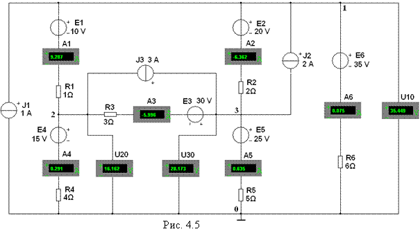

Задание 2. Запустить
лабораторный комплекс Labworks и среду
МS10 (щёлкнув мышью на команде Эксперимент меню комплекса Labworks). Открыть файл 4.5.ms10, размещённый в папке Circuit Design Suitе 10.0 среды МS10 с обобщённой схемой цепи постоянного тока (рис. 4.5). Согласно
варианту (см. табл. 4.1) скорректировать схему, а именно:
- удалить из схемы
источники тока Jk, не
указанные в табл. 4.1 (два раза щёлкать мышью на соответствующих
изображениях источников тока, а затем в диалоговых окнах на закладках Delete, или
поочерёдно выделять их в
схеме и нажимать на клавишу
Del клавиатуры);
- удалить из схемы не указанные в
табл. 4.1 источники напряжения Ek, а затем
"соединить"
проводниками выводы соответствующих амперметров или резисторов ветвей с узлами
схемы;
- согласно варианту
задания установить в диалоговых
окнах параметры и режимы работы компонентов Ek, Jk и Rk;
- задать
режим работы DC амперметров и вольтметров,
внутренние сопротивления амперметров RA = 1 нОм и вольтметров RV = 10 МОм;
- запустить
программу моделирования схемы цепи (щелкнув мышью на цифре 1 кнопки )
и записать показания приборов в
табл. 4.3;
- скопировать скорректированную
схему на страницу отчёта.